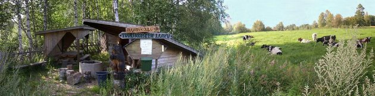
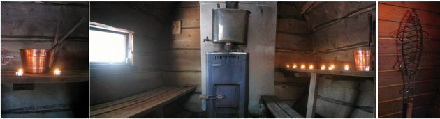

Vapaa aika
Koski-Tuurin Kammareissa on monenlaista tekemistä. Tällä sivulla on esiteltynä Koski-Tuurin Kammareiden vapaa-ajan
viettomahdollisuuksia sekä muutamia kiinnostavia kohteitä Koski-Tuurin Kammareiden ympäristössä.
Koski-Tuurin Kammarien laajalla pihanurmella voi pelata ulkopelejä kuten krokettia, mölkkyä ja heittää
tikkaa. Lisäksi piha-alueella on ulkokalusteita sekä hiiligrilli. Sadan metrin päässä tilalta on Tuurinkosken Laavu.
Siellä voi paistaa makkaraa ja nauttia ulkonuotiosta. Tilan mailla kulkevassa Töysänjoessa voi uida ja tietysti kalastaa.
Kalastuksen ystäville tiedoksi että joesta saa särkiä ja ahvenia. Myös harjus ja hauki ovat tuttuja saaliita emännälle.
Kokemisen arvoisia ovat myös Koski-Tuurin tynnyrisaunan
rauhoittava tunnelma sekä hyväksi kehutut löylyt.
Läheiset metsät tarjoavat marjastus- ja sienestysmahdollisuuden. Ihan tilan vierestä kulkee Kuuden tähden reitistö,
joka on yli 400 km laajuinen viitoitettu patikointireitistö kuuden lähikunnan alueilla. Reittien varsilla on kymmenittäin laavuja,
joissa voi yöpyä sekä pitää nuotiota. Talvella kannattaa pakata sukset mukaan ja lähteä Kaarina-emännän kirittämänä laduille. Valaistua latua on yli 100km.

Halutessaan voi myös osallistua tilalla eläintenhoitoon ja erilaisiin maatalon päivärutiineihin. Koski-Tuurin Kammarit
vuokraavat polkupyöriä sekä tandempyörää majoittujille edulliseen päivähintaan. Kesäpäivä kuluu mielekkäästi pyöräillessä
maaseudun keskellä ja pyörällä kahden kilometrin matkan kulkee joutuisasti vaikkapa Veljeksen Keskisen kauppakylään ja sen
tapahtumiin.
Rantasauna
Saunominen kynttilän valossa, kosken pauhunnan kuuluessa on täynnä tunnelmaa.
Ihanan virkistävään jokiveteen voi pulahtaa saunasta päin tai kesken kuuman kesäpäivän. Koski-Tuurin rantasauna sijaitsee
noin sadan metrin päässä päärakennuksesta.
